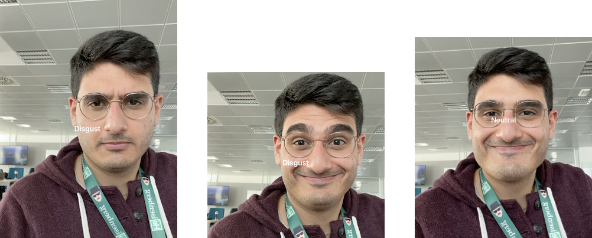
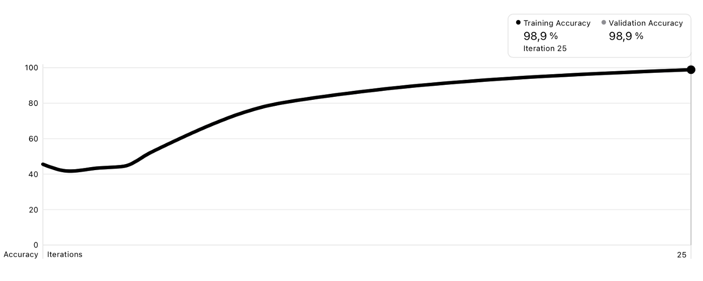
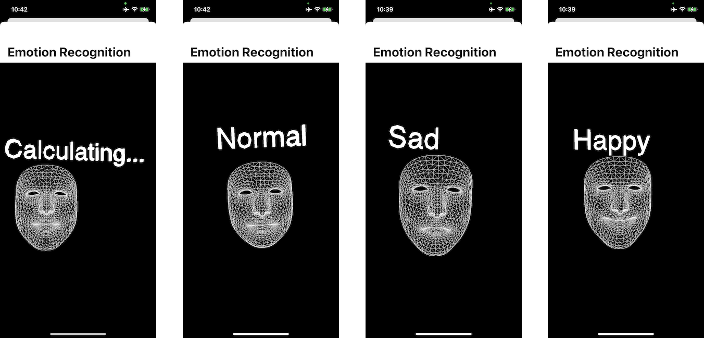

Our story is about understanding how to use machine learning and use it properly; it all started with the idea to find a way to recognize people’s emotions.
N.B. that very it’s very difficult to recognise human’s emotions even for people, of course for a machine even more.
Our final goal is to create a game based on emotion recognition but, of course, to accomplish this we have to become proficient in machine learning.
We started working on the Apple framework CoreML because we decided to use an existing model to do our job (and make our life easier). Throughout CoreML you have access to machine learning in your project and to do this, you have just to implement a .model file and write a few lines of codes. The model we found on the internet was trained with images of people who represent many different emotions such as angriness, happiness, sadness, disgust, and surprise.

We found out that this model was a bit inaccurate and the detection of the emotions was not so coherent with the faces we were trying to do in our testing photos, so this lead us to use another way to understand machine learning and also to become proficient in the creation of our model so we decide to use CreateML
CreateML perhaps allows you to create your model.
The accuracy problem of the model we found online was most likely because of the training it was submitted to. So we figured out a different way of taking pictures for the model training.
The next step was to understand the technology behind FaceID because this is the way we used to scan the faces of people. FaceID can be used to track points of the face and create “face masks”; through a simple tool (ARMotion) that we created, we recorded three videos of three different emotions: happiness, sadness, and normal expression.
From these videos, we took out some frames (about 7000) and we trained our model with these photos.

Using FaceID’s scans the model can adapt its emotion recognition to every people because we used only the given face mask, without the background.

The model we created is a bit inaccurate due to the lack of time, but the use of faceID helps our model to be lighter because the model we found on the internet occupied 460Mb more or less while our model 17Kb. For our future implementations, we want to create a more precise model; we understood that the secret to raising the model's precision is using more images from different distances and different angles.
We know that there is a lot of potential in ML, you can create basically whatever you want with it, is all about time and learning.
Credits to Piero Chianese